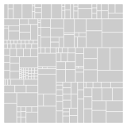

Class pv.Layout.treemap
A tree layout in the form of an treemap.  Treemaps are a form of space-filling layout that represents nodes as boxes, with child nodes placed within parent boxes. The size of each box is proportional to the size of the node in the tree.
This particular algorithm is taken from Bruls, D.M., C. Huizing, and J.J. van Wijk, "Squarified Treemaps" in Data Visualization 2000, Proceedings of the Joint Eurographics and IEEE TCVG Sumposium on Visualization, 2000, pp. 33-42.
This tree layout is intended to be extended (see pv.Mark#extend) by a pv.Bar. The data property returns an array of nodes for use by other property functions. The following node attributes are supported:
- left - the cell left position.
- top - the cell top position.
- width - the cell width.
- height - the cell height.
- depth - the node depth (tier; the root is 0).
- keys - an array of string keys for the node.
- size - the aggregate node size.
- children - child nodes, if any.
- data - the associated tree element, for leaf nodes.
.add(pv.Bar) .extend(pv.Layout.treemap(tree))To display internal nodes, and color by depth, say:
.add(pv.Bar) .extend(pv.Layout.treemap(tree).inset(10)) .fillStyle(pv.Colors.category19().by(function(n) n.depth))The format of the tree argument is a hierarchical object whose leaf nodes are numbers corresponding to their size. For an example, and information on how to convert tabular data into such a tree, see pv.Tree. If the leaf nodes are not numbers, a #size function can be specified to override how the tree is interpreted. This size function can also be used to transform the data.
By default, the treemap fills the full width and height of the parent
panel, and only leaf nodes are rendered. If an #inset is specified,
internal nodes will be rendered, each inset from their parent by the
specified margins. Rounding can be enabled using #round. Finally, an
optional root key can be specified using #root for convenience.
Defined in: Treemap.js.
| Constructor Attributes | Constructor Name and Description |
|---|---|
|
pv.Layout.treemap(tree)
Returns a new treemap tree layout.
|
| Method Attributes | Method Name and Description |
|---|---|
|
inset(top, right, bottom, left)
Specifies the margins to inset child nodes from their parents; as a side
effect, this also enables the display of internal nodes, which are hidden
by default.
|
|
|
root(v)
Specifies the root key; optional.
|
|
|
round(v)
Enables or disables rounding.
|
|
|
size(f)
Specifies the sizing function.
|
- Parameters:
- tree
- a tree (an object) who leaf attributes have sizes.
- Returns:
- {pv.Layout.treemap} a tree layout.
- Parameters:
- {number} top
- the top margin.
- {number} right Optional
- the right margin.
- {number} bottom Optional
- the bottom margin.
- {number} left Optional
- the left margin.
- Returns:
- {pv.Layout.treemap} this.
- Parameters:
- {string} v
- the root key.
- Returns:
- {pv.Layout.treemap} this.
- Parameters:
- {boolean} v
- whether rounding should be enabled.
- Returns:
- {pv.Layout.treemap} this.
For example, if the tree data structure represents a file system, with files as leaf nodes, and each file has a bytes attribute, you can specify a size function as:
.size(function(d) d.bytes)This function will return undefined for internal nodes (since these do not have a bytes attribute), and a number for leaf nodes.
Note that the built-in Math.sqrt and Math.log methods can be used as sizing functions. These function similarly to Number, except perform a root and log scale, respectively.
- Parameters:
- {function} f
- the new sizing function.
- Returns:
- {pv.Layout.treemap} this.